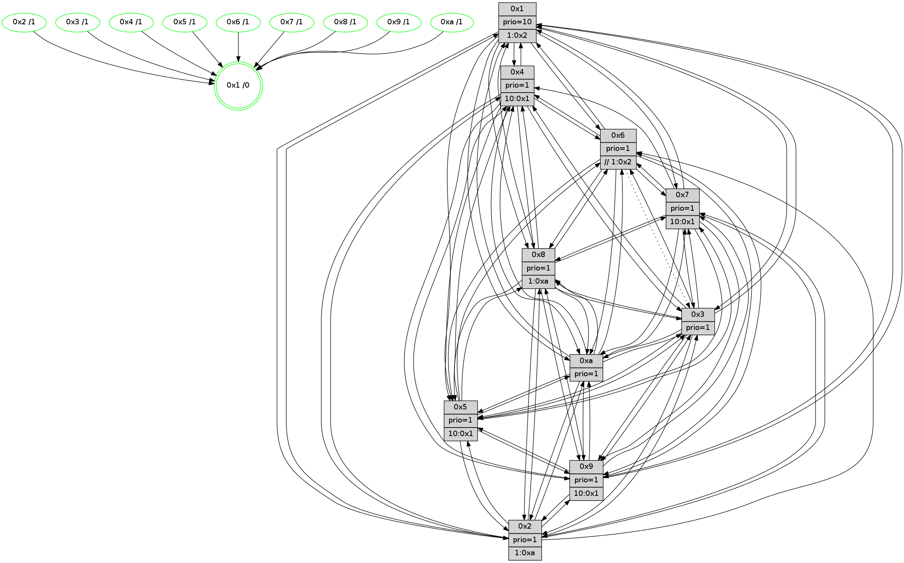

>> << IDX [start] -100 -25 -5 +0 +5 +25 +100 [1350.49695301]
 Previous packets
1345.000016 beacon03(faad) #0 coord=01,02,03,04,05,06,07,0a,09,08 cycle=688.0ms assoc 64 a2 71
1345.010017 beacon04(faad) #0 coord=01,02,03,04,05,06,07,0a,09,08 cycle=688.0ms assoc 64 d5 9b
1345.020018 beacon05(faad) #0 coord=01,02,03,04,05,06,07,0a,09,08 cycle=688.0ms assoc 64 af d6
1345.030017 beacon06(faad) #0 coord=01,02,03,04,05,06,07,0a,09,08 cycle=688.0ms assoc 64 21 01
1345.040018 beacon07(faad) #0 coord=01,02,03,04,05,06,07,0a,09,08 cycle=688.0ms assoc 64 5b 4c
1345.050023 beacon0a(faad) #0 coord=01,02,03,04,05,06,07,0a,09,08 cycle=688.0ms assoc 64 2a 47
1345.070023 beacon08(faad) #0 coord=01,02,03,04,05,06,07,0a,09,08 cycle=688.0ms assoc 64 de dd
1345.081550 [Hello(1): seq=767 sym=4,2,9,5,10,3,8,6,7 sysInfo=coloring-mode-on,ColoringModeRequestCalled stat=4:3,7,1,2/2:13,13,10,5/9:13,7,15,1/5:5,5,15,8/10:9,5,13,7/3:13,7,11,10/8:15,0,12,2/6:2,3,11,0/7:13,1,4,1]
1345.084565 [Hello(5): seq=858 sym=7,6,4,3,1,9,8,10,2 sysInfo=hasWarning stat=7:9,9,10,0/6:12,0,8,4/4:13,15,15,14/3:3,9,3,1/1:5,9,8,0/9:9,8,11,10/8:11,10,13,4/10:12,8,12,8/2:0,6,4,7]
1345.087021 [Color(10) seq=447 @0:0 prio=1]
1345.088623 [Color(9) seq=417 @0:0 prio=1 >10.@1,1.@5,1.@a]
1345.091575 [Hello(2): seq=854 sym=4,5,7,3,9,8,10,1 sysInfo=hasWarning stat=4:10,1,0,12/5:5,13,9,2/7:7,15,1,1/3:0,1,0,0/9:3,14,4,9/8:1,1,12,12/10:10,8,15,10/1:15,4,8,0]
1345.094881 [STC(1) #0.226 tree-change,inconsistent-stability,stable,to-color d=0]
1345.096175 [Color(2) seq=434 @0:0 prio=1 >1.@a]
1345.098109 [Hello(3): seq=858 sym=1,7,2,4,8,9,10,5 sysInfo=hasWarning stat=1:0,11,14,0/7:1,0,4,14/2:7,15,14,2/4:9,9,6,12/8:8,15,14,5/9:11,12,7,0/10:7,7,9,4/5:10,4,7,0]
1345.101769 [Color(3) seq=487 @0:0 prio=1]
1345.104145 [Hello(6): seq=858 sym=2,5,4,7,9,8,10,1 asym=3 sysInfo=hasWarning stat=2:3,7,1,0/5:15,8,0,3/4:4,3,4,7/7:5,1,14,15/9:1,0,11,10/8:2,8,7,6/10:1,6,1,12/1:11,6,11,1/3:0,1,0,0]
1345.107024 [Color(6) seq=490 @0:0 prio=1 >>1.@2,1.@3,1.@4]
----------------------------------------------------------------------
1345.768166 beacon01(faad) #0 coord=01,02,03,04,05,06,07,0a,09,08 cycle=688.0ms assoc
-- color-indic=1 64 f7 08
1345.778148 beacon02(faad) #0 coord=01,02,03,04,05,06,07,0a,09,08 cycle=688.0ms assoc 64 64 39
1345.788148 beacon03(faad) #0 coord=01,02,03,04,05,06,07,0a,09,08 cycle=688.0ms assoc 64 1e 74
1345.798150 beacon04(faad) #0 coord=01,02,03,04,05,06,07,0a,09,08 cycle=688.0ms assoc 64 69 9e
1345.808149 beacon05(faad) #0 coord=01,02,03,04,05,06,07,0a,09,08 cycle=688.0ms assoc 64 13 d3
1345.818148 beacon06(faad) #0 coord=01,02,03,04,05,06,07,0a,09,08 cycle=688.0ms assoc 64 9d 04
1345.828149 beacon07(faad) #0 coord=01,02,03,04,05,06,07,0a,09,08 cycle=688.0ms assoc 64 e7 49
1345.838154 beacon0a(faad) #0 coord=01,02,03,04,05,06,07,0a,09,08 cycle=688.0ms assoc 64 96 42
1345.858154 beacon08(faad) #0 coord=01,02,03,04,05,06,07,0a,09,08 cycle=688.0ms assoc 64 62 d8
1345.871203 [Hello(10): seq=791 sym=6,2,3,8,7,5,9,4,1 sysInfo=hasWarning stat=6:9,15,12,3/2:8,11,1,0/3:14,8,1,14/8:5,4,12,3/7:8,8,9,9/5:14,13,10,0/9:4,6,1,0/4:1,4,6,1/1:6,10,8,1]
1345.873947 [Hello(4): seq=858 sym=5,8,6,2,3,9,10,1 sysInfo= stat=5:12,12,1,1/8:1,2,0,0/6:7,10,8,14/2:0,6,1,0/3:7,5,10,14/9:4,14,10,1/10:3,12,14,14/1:0,9,13,1]
1345.876927 [Color(1) seq=538 @0:0 prio=10 >1.@2,1.@3,1.@4,1.@5]
1345.879499 [Hello(8): seq=802 sym=5,2,3,7,9,6,4,10,1 sysInfo=hasWarning stat=5:13,14,3,0/2:6,0,7,12/3:1,3,11,3/7:2,8,1,1/9:14,14,5,4/6:3,1,9,15/4:8,14,2,0/10:6,7,9,4/1:5,15,14,0]
1345.884543 [STC(8)->1 #0.226 tree-change,inconsistent-stability,stable,to-color d=1]
1345.886170 [STC(4)->1 #0.226 tree-change,inconsistent-stability,stable,to-color d=1]
1345.887413 [STC(5)->1 #0.226 tree-change,inconsistent-stability,stable,to-color d=1]
1345.888670 [STC(9)->1 #0.226 tree-change,inconsistent-stability,stable,to-color d=1]
1345.890133 [Hello(7): seq=858 sym=2,3,5,6,4,8,9,10,1 sysInfo=hasWarning stat=2:9,8,15,3/3:4,14,1,3/5:15,0,7,2/6:11,8,15,11/4:8,0,2,0/8:1,5,8,0/9:9,6,6,1/10:10,0,11,6/1:10,3,11,0]
1345.893265 [STC(7)->1 #0.226 tree-change,inconsistent-stability,stable,to-color d=1]
1345.894741 [Color(5) seq=421 @0:0 prio=1 >10.@1,1.@6,1.@7,1.@8]
1345.897139 [Color(7) seq=386 @0:0 prio=1 >10.@1,1.@5,1.@6,1.@8]
1345.899086 [Color(8) seq=457 @0:0 prio=1 >1.@a]
1345.901146 [STC(10)->1 #0.226 tree-change,inconsistent-stability,stable,to-color d=1]
1345.904403 [TreeStatus(10)-.->1 #0.226 tree-change,inconsistent-stability,stable child=1]
1345.909874 [Color(4) seq=397 @0:0 prio=1 >10.@1,1.@2,1.@3,1.@5]
----------------------------------------------------------------------
1346.556297 beacon01(faad) #0 coord=01,02,03,04,05,06,07,0a,09,08 cycle=688.0ms assoc
-- color-indic=1 64 33 06
1346.566279 beacon02(faad) #0 coord=01,02,03,04,05,06,07,0a,09,08 cycle=688.0ms assoc 64 a0 37
1346.576280 beacon03(faad) #0 coord=01,02,03,04,05,06,07,0a,09,08 cycle=688.0ms assoc 64 da 7a
1346.586278 beacon04(faad) #0 coord=01,02,03,04,05,06,07,0a,09,08 cycle=688.0ms assoc 64 ad 90
1346.596279 beacon05(faad) #0 coord=01,02,03,04,05,06,07,0a,09,08 cycle=688.0ms assoc 64 d7 dd
1346.606279 beacon06(faad) #0 coord=01,02,03,04,05,06,07,0a,09,08 cycle=688.0ms assoc 64 59 0a
1346.616281 beacon07(faad) #0 coord=01,02,03,04,05,06,07,0a,09,08 cycle=688.0ms assoc 64 23 47
1346.626286 beacon0a(faad) #0 coord=01,02,03,04,05,06,07,0a,09,08 cycle=688.0ms assoc 64 52 4c
1346.646285 beacon08(faad) #0 coord=01,02,03,04,05,06,07,0a,09,08 cycle=688.0ms assoc 64 a6 d6
1346.658828 [Hello(1): seq=768 sym=4,2,9,5,10,3,8,6,7 sysInfo=coloring-mode-on,ColoringModeRequestCalled stat=4:3,8,2,2/2:13,14,10,5/9:13,7,0,1/5:5,6,0,8/10:10,5,14,8/3:14,8,11,10/8:0,1,13,2/6:3,4,11,0/7:14,2,5,1]
1346.661863 [Color(10) seq=448 @0:0 prio=1]
1346.663146 [Color(9) seq=418 @0:0 prio=1 >10.@1,1.@5,1.@a]
1346.664873 [Hello(2): seq=855 sym=4,5,7,6,3,9,8,10,1 sysInfo=hasWarning stat=4:11,2,1,12/5:6,14,10,2/7:8,0,2,1/6:0,1,0,0/3:1,2,0,0/9:3,14,5,9/8:2,2,13,12/10:11,8,0,11/1:0,5,8,0]
1346.667821 [Hello(5): seq=859 sym=7,6,4,3,1,9,8,10,2 sysInfo=hasWarning stat=7:9,10,10,0/6:13,1,8,4/4:13,0,15,14/3:4,10,3,1/1:5,9,9,0/9:9,9,12,10/8:11,11,13,4/10:12,9,13,9/2:1,7,4,7]
1346.671199 [Hello(6): seq=859 sym=2,5,4,7,9,8,10,1 asym=3 sysInfo=hasWarning stat=2:3,7,1,0/5:0,9,1,3/4:5,4,5,7/7:6,2,15,15/9:1,0,12,10/8:3,9,8,6/10:2,6,2,13/1:12,7,11,1/3:0,1,0,0]
1346.673813 [Hello(3): seq=859 sym=1,7,6,2,4,8,9,10,5 sysInfo=hasWarning stat=1:1,12,14,0/7:2,1,5,14/6:0,1,0,0/2:7,15,14,2/4:10,10,7,12/8:9,0,15,5/9:11,12,8,0/10:8,7,10,5/5:11,5,8,0]
1346.676605 [Color(2) seq=435 @0:0 prio=1 >1.@a]
1346.679622 [Color(6) seq=491 @0:0 prio=1 >>1.@2,1.@3,1.@4]
1346.681870 [Color(3) seq=488 @0:0 prio=1]
----------------------------------------------------------------------
1347.344428 beacon01(faad) #0 coord=01,02,03,04,05,06,07,0a,09,08 cycle=688.0ms assoc
-- color-indic=1 64 8f 03
1347.354411 beacon02(faad) #0 coord=01,02,03,04,05,06,07,0a,09,08 cycle=688.0ms assoc 64 1c 32
1347.364412 beacon03(faad) #0 coord=01,02,03,04,05,06,07,0a,09,08 cycle=688.0ms assoc 64 66 7f
1347.374412 beacon04(faad) #0 coord=01,02,03,04,05,06,07,0a,09,08 cycle=688.0ms assoc 64 11 95
1347.384411 beacon05(faad) #0 coord=01,02,03,04,05,06,07,0a,09,08 cycle=688.0ms assoc 64 6b d8
1347.394410 beacon06(faad) #0 coord=01,02,03,04,05,06,07,0a,09,08 cycle=688.0ms assoc 64 e5 0f
1347.404413 beacon07(faad) #0 coord=01,02,03,04,05,06,07,0a,09,08 cycle=688.0ms assoc 64 9f 42
1347.414416 beacon0a(faad) #0 coord=01,02,03,04,05,06,07,0a,09,08 cycle=688.0ms assoc 64 ee 49
1347.434418 beacon08(faad) #0 coord=01,02,03,04,05,06,07,0a,09,08 cycle=688.0ms assoc 64 1a d3
1347.445971 [Hello(10): seq=792 sym=6,2,3,8,7,5,9,4,1 sysInfo=hasWarning stat=6:10,0,12,3/2:9,12,1,0/3:15,9,1,14/8:5,4,12,3/7:8,8,9,9/5:15,13,10,0/9:4,7,1,0/4:1,5,6,1/1:7,10,8,1]
1347.449661 [Hello(8): seq=803 sym=5,2,3,7,9,6,4,10,1 sysInfo=hasWarning stat=5:14,14,3,0/2:7,1,7,12/3:2,4,11,3/7:2,8,1,1/9:14,15,5,4/6:4,2,9,15/4:8,15,2,0/10:7,8,10,5/1:6,15,14,0]
1347.452470 [Color(8) seq=458 @0:0 prio=1 >1.@a]
1347.454079 [Color(1) seq=539 @0:0 prio=10 >1.@2,1.@3,1.@4,1.@5]
1347.457437 [Hello(9): seq=803 sym=2,5,3,4,7,6,8,10,1 sysInfo=hasWarning stat=2:12,9,12,10/5:0,2,14,7/3:13,13,4,3/4:11,2,15,1/7:12,9,4,4/6:10,15,10,13/8:11,9,0,5/10:6,4,3,5/1:12,15,15,1]
1347.459902 [Hello(7): seq=859 sym=2,3,5,6,4,8,9,10,1 sysInfo=hasWarning stat=2:10,9,15,3/3:5,15,1,3/5:0,0,7,2/6:12,9,15,11/4:8,1,2,0/8:1,6,8,0/9:9,7,6,1/10:11,1,12,7/1:11,3,11,0]
1347.464277 [Hello(4): seq=859 sym=5,8,6,2,3,9,10,1 sysInfo= stat=5:13,12,2,1/8:1,2,0,0/6:8,11,8,14/2:1,7,1,0/3:8,6,10,14/9:5,15,10,1/10:3,13,14,14/1:1,9,13,1]
1347.468934 [Color(5) seq=422 @0:0 prio=1 >10.@1,1.@6,1.@7,1.@8]
1347.472876 [Color(4) seq=398 @0:0 prio=1 >10.@1,1.@2,1.@3,1.@5]
1347.474625 [Color(7) seq=387 @0:0 prio=1 >10.@1,1.@5,1.@6,1.@8]
----------------------------------------------------------------------
1348.132561 beacon01(faad) #0 coord=01,02,03,04,05,06,07,0a,09,08 cycle=688.0ms assoc
-- color-indic=1 64 1b da
1348.142544 beacon02(faad) #0 coord=01,02,03,04,05,06,07,0a,09,08 cycle=688.0ms assoc 64 88 eb
1348.152543 beacon03(faad) #0 coord=01,02,03,04,05,06,07,0a,09,08 cycle=688.0ms assoc 64 f2 a6
1348.162543 beacon04(faad) #0 coord=01,02,03,04,05,06,07,0a,09,08 cycle=688.0ms assoc 64 85 4c
1348.172543 beacon05(faad) #0 coord=01,02,03,04,05,06,07,0a,09,08 cycle=688.0ms assoc 64 ff 01
1348.182543 beacon06(faad) #0 coord=01,02,03,04,05,06,07,0a,09,08 cycle=688.0ms assoc 64 71 d6
1348.192544 beacon07(faad) #0 coord=01,02,03,04,05,06,07,0a,09,08 cycle=688.0ms assoc 64 0b 9b
1348.202548 beacon0a(faad) #0 coord=01,02,03,04,05,06,07,0a,09,08 cycle=688.0ms assoc 64 7a 90
1348.222550 beacon08(faad) #0 coord=01,02,03,04,05,06,07,0a,09,08 cycle=688.0ms assoc 64 8e 0a
1348.234777 [Hello(1): seq=769 sym=4,2,9,5,10,3,8,6,7 sysInfo=coloring-mode-on,ColoringModeRequestCalled stat=4:4,9,2,2/2:14,15,10,5/9:14,8,0,1/5:6,7,0,8/10:11,6,14,8/3:15,9,11,10/8:0,1,13,2/6:4,5,11,0/7:15,3,5,1]
1348.237751 [Hello(3): seq=860 sym=1,7,6,2,4,8,9,10,5 sysInfo=hasWarning stat=1:2,13,14,0/7:3,2,5,14/6:0,1,0,0/2:7,15,14,2/4:11,11,7,12/8:10,1,15,5/9:12,12,8,0/10:9,7,10,5/5:11,6,8,0]
1348.240958 [Hello(6): seq=860 sym=2,5,4,7,9,8,10,1 asym=3 sysInfo=hasWarning stat=2:3,7,1,0/5:0,10,1,3/4:6,5,5,7/7:7,3,15,15/9:2,0,12,10/8:4,10,8,6/10:3,6,2,13/1:13,8,11,1/3:0,2,0,0]
1348.243940 [Hello(5): seq=860 sym=7,6,4,3,1,9,8,10,2 sysInfo=hasWarning stat=7:9,11,10,0/6:14,2,8,4/4:13,1,15,14/3:5,11,3,1/1:5,9,9,0/9:9,9,12,10/8:11,11,13,4/10:13,9,13,9/2:1,8,4,7]
1348.248269 [Hello(2): seq=856 sym=4,5,7,6,3,9,8,10,1 sysInfo=hasWarning stat=4:12,3,1,12/5:6,15,10,2/7:9,1,2,1/6:0,2,0,0/3:1,3,0,0/9:4,14,5,9/8:3,3,13,12/10:12,8,0,11/1:1,6,8,0]
1348.251399 [Color(2) seq=436 @0:0 prio=1 >1.@a]
1348.252970 [Color(10) seq=449 @0:0 prio=1]
1348.254991 [Color(9) seq=419 @0:0 prio=1 >10.@1,1.@5,1.@a]
1348.257435 [Color(3) seq=489 @0:0 prio=1]
1348.264078 [Color(6) seq=492 @0:0 prio=1 >>1.@2,1.@3,1.@4]
----------------------------------------------------------------------
1348.920693 beacon01(faad) #0 coord=01,02,03,04,05,06,07,0a,09,08 cycle=688.0ms assoc
-- color-indic=1 64 a7 df
1348.930677 beacon02(faad) #0 coord=01,02,03,04,05,06,07,0a,09,08 cycle=688.0ms assoc 64 34 ee
1348.940676 beacon03(faad) #0 coord=01,02,03,04,05,06,07,0a,09,08 cycle=688.0ms assoc 64 4e a3
1348.950676 beacon04(faad) #0 coord=01,02,03,04,05,06,07,0a,09,08 cycle=688.0ms assoc 64 39 49
1348.960675 beacon05(faad) #0 coord=01,02,03,04,05,06,07,0a,09,08 cycle=688.0ms assoc 64 43 04
1348.970676 beacon06(faad) #0 coord=01,02,03,04,05,06,07,0a,09,08 cycle=688.0ms assoc 64 cd d3
1348.980676 beacon07(faad) #0 coord=01,02,03,04,05,06,07,0a,09,08 cycle=688.0ms assoc 64 b7 9e
1348.990680 beacon0a(faad) #0 coord=01,02,03,04,05,06,07,0a,09,08 cycle=688.0ms assoc 64 c6 95
1349.010682 beacon08(faad) #0 coord=01,02,03,04,05,06,07,0a,09,08 cycle=688.0ms assoc 64 32 0f
1349.022539 [Hello(10): seq=793 sym=6,2,3,8,7,5,9,4,1 sysInfo=hasWarning stat=6:10,1,12,3/2:9,12,1,0/3:15,10,1,14/8:6,5,12,3/7:9,9,9,9/5:15,14,10,0/9:5,8,1,0/4:2,6,6,1/1:8,11,8,1]
1349.025648 [Hello(7): seq=860 sym=2,3,5,6,4,8,9,10,1 sysInfo=hasWarning stat=2:11,10,15,3/3:6,0,1,3/5:1,0,7,2/6:13,10,15,11/4:8,1,2,0/8:1,6,8,0/9:9,8,6,1/10:12,2,12,7/1:12,3,11,0]
1349.028300 [Hello(8): seq=804 sym=5,2,3,7,9,6,4,10,1 sysInfo=hasWarning stat=5:15,15,3,0/2:8,2,7,12/3:3,5,11,3/7:3,9,1,1/9:15,0,5,4/6:5,3,9,15/4:9,0,2,0/10:8,9,10,5/1:7,0,14,0]
1349.030831 [Color(5) seq=423 @0:0 prio=1 >10.@1,1.@6,1.@7,1.@8]
1349.032439 [STC(1) #0.227 tree-change,inconsistent-stability,stable,to-color d=0]
1349.035980 [Color(1) seq=540 @0:0 prio=10 >1.@2,1.@3,1.@4,1.@5]
1349.039579 [Hello(4): seq=860 sym=5,8,6,2,3,9,10,1 sysInfo= stat=5:14,12,2,1/8:1,2,0,0/6:9,12,8,14/2:2,8,1,0/3:9,7,10,14/9:5,0,10,1/10:4,14,14,14/1:2,9,13,1]
1349.043532 [Color(4) seq=399 @0:0 prio=1 >10.@1,1.@2,1.@3,1.@5]
1349.049253 [Color(8) seq=459 @0:0 prio=1 >1.@a]
1349.051067 [Color(7) seq=388 @0:0 prio=1 >10.@1,1.@5,1.@6,1.@8]
----------------------------------------------------------------------
1349.708824 beacon01(faad) #0 coord=01,02,03,04,05,06,07,0a,09,08 cycle=688.0ms assoc
-- color-indic=1 64 63 d1
1349.718806 beacon02(faad) #0 coord=01,02,03,04,05,06,07,0a,09,08 cycle=688.0ms assoc 64 f0 e0
1349.728806 beacon03(faad) #0 coord=01,02,03,04,05,06,07,0a,09,08 cycle=688.0ms assoc 64 8a ad
1349.738808 beacon04(faad) #0 coord=01,02,03,04,05,06,07,0a,09,08 cycle=688.0ms assoc 64 fd 47
1349.748806 beacon05(faad) #0 coord=01,02,03,04,05,06,07,0a,09,08 cycle=688.0ms assoc 64 87 0a
1349.758806 beacon06(faad) #0 coord=01,02,03,04,05,06,07,0a,09,08 cycle=688.0ms assoc 64 09 dd
1349.768808 beacon07(faad) #0 coord=01,02,03,04,05,06,07,0a,09,08 cycle=688.0ms assoc 64 73 90
1349.778812 beacon0a(faad) #0 coord=01,02,03,04,05,06,07,0a,09,08 cycle=688.0ms assoc 64 02 9b
1349.798812 beacon08(faad) #0 coord=01,02,03,04,05,06,07,0a,09,08 cycle=688.0ms assoc 64 f6 01
1349.811039 [Hello(1): seq=770 sym=4,2,9,5,10,3,8,6,7 sysInfo=coloring-mode-on,ColoringModeRequestCalled stat=4:5,10,2,2/2:15,0,10,5/9:14,9,0,1/5:7,7,0,8/10:12,7,14,8/3:0,10,11,10/8:0,2,13,2/6:5,6,11,0/7:15,4,5,1]
1349.813990 [Hello(5): seq=861 sym=7,6,4,3,9,8,10,2 sysInfo=hasWarning stat=7:9,12,10,0/6:14,3,8,4/4:14,2,15,14/3:5,12,3,1/9:10,10,12,10/8:11,12,13,4/10:13,10,13,9/2:2,9,4,7]
1349.816496 [Hello(3): seq=861 sym=1,7,6,2,4,8,9,10,5 sysInfo=hasWarning stat=1:3,14,15,0/7:4,3,5,14/6:0,2,0,0/2:7,15,14,2/4:12,12,7,12/8:11,2,15,5/9:12,12,8,0/10:10,7,10,5/5:11,7,8,0]
1349.819335 [Hello(2): seq=857 sym=4,5,7,6,3,9,8,10,1 sysInfo=hasWarning stat=4:13,4,1,12/5:6,0,10,2/7:10,2,2,1/6:0,3,0,0/3:1,4,0,0/9:4,15,5,9/8:4,4,13,12/10:13,9,0,11/1:2,7,9,0]
1349.821845 [STC(9)->1 #0.227 tree-change,inconsistent-stability,stable,to-color d=1]
1349.824263 [STC(3)->1 #0.227 tree-change,inconsistent-stability,stable,to-color d=1]
1349.826792 [STC(2)->1 #0.227 tree-change,inconsistent-stability,stable,to-color d=1]
1349.828124 [Color(3) seq=490 @0:0 prio=1]
1349.829575 [STC(10)->1 #0.227 tree-change,inconsistent-stability,stable,to-color d=1]
1349.831450 [Color(2) seq=437 @0:0 prio=1 >1.@a]
1349.832970 [Hello(6): seq=861 sym=5,4,7,9,8,10,1 asym=3 sysInfo=hasWarning stat=5:0,11,1,3/4:7,6,5,7/7:8,4,15,15/9:2,0,12,10/8:5,11,8,6/10:4,6,2,13/1:14,9,12,1/3:0,2,0,0]
1349.837345 [STC(6)->1 #0.227 tree-change,inconsistent-stability,stable,to-color d=1]
1349.838753 [Color(9) seq=420 @0:0 prio=1 >10.@1,1.@5,1.@a]
1349.840895 [Color(6) seq=493 @0:0 prio=1 >>1.@2,1.@3,1.@4]
1349.846002 [Color(10) seq=450 @0:0 prio=1]